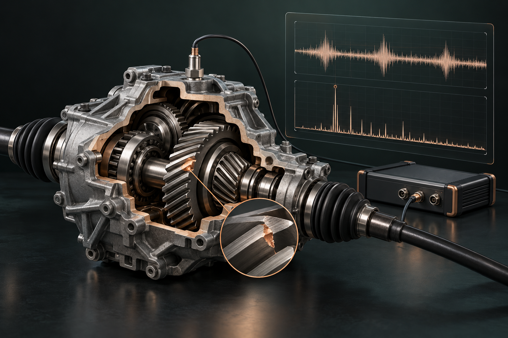

OCTOBER 2025 — PRESENT · BURTON, OHIO
W.M. Associates Inc.
NVH Engineer

I develop tools that help engineers interpret the noise and vibration of mechanical systems.
At W.M. Associates, my work includes developing NVH test software to identify nicked gears in Ford EV axles. I also support OEM and supplier NVH programs through experimental testing and advanced vibration analysis.
01
NVH test software
Developing software for gear-defect diagnostics from measured vibration signals.
02
Experimental testing
Supporting noise and vibration measurements for OEM and supplier programs.
03
Signal processing & visualization
Building custom analysis and visualization tools to make diagnostic results easier to interpret.